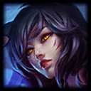
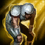
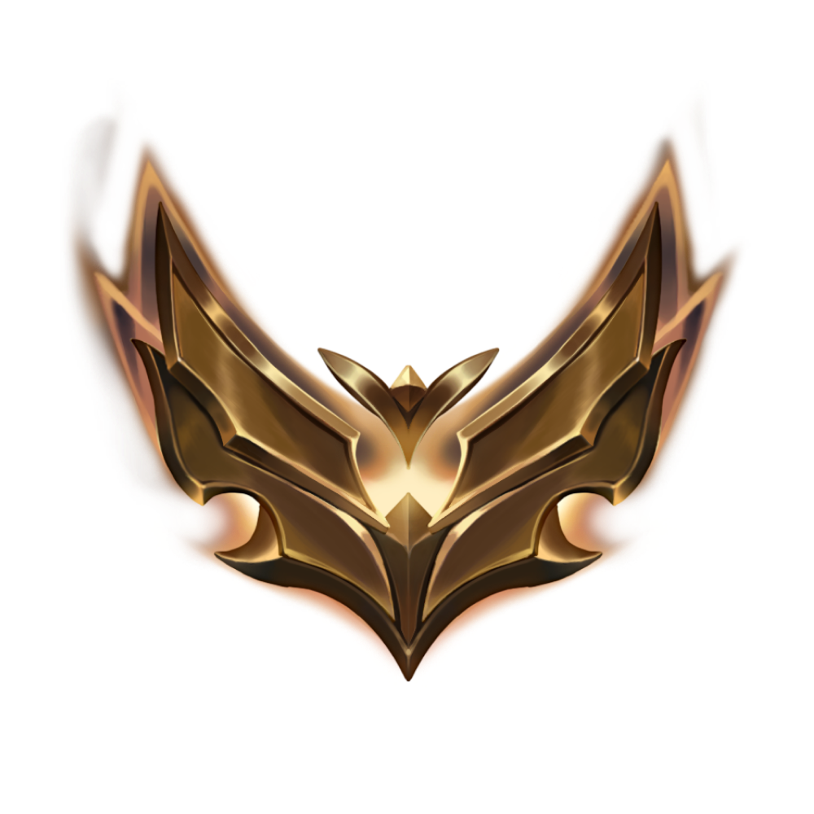

MODOS DE JUEGO
LA GRIETA DEL INVOCADOR
La Grieta del Invocador (Summoner’s Rift) es el mapa estrella de League of Legends : un escenario simétrico 5 vs 5 dividido en tres líneas (top, mid y bot) y una jungla central.El objetivo es destruir el Nexo rival empujando oleadas de súbditos, derribando torretas e imponiéndose en peleas de equipo.
POSICIONES Y DINAMICAS BASICAS
Top Laner

Ubicación: carril superior, alejado del Dragón.
Perfil de campeón: tanques o duelistas autosuficientes ( Shen,
Función principal: ejercer presión dividida («split push»), iniciar peleas o ser la línea frontal que absorbe daño.
Hechizos habituales: Teleport para unirse a objetivos globales o contrarrestar una “split‑push”, y Flash como herramienta de combo o escape.
Jungla

Ubicación: la jungla entre carriles y río.
Perfil de campeón: iniciadores, asesinos o soportes de utilidad (
Función principal: controlar Dragones, Heraldo y Barón; apoyar a las líneas con emboscadas; colocar y limpiar visión.
Hechizos habituales: Smite (obligatorio para castigar monstruos y asegurar objetivos) y Flash para jugadas agresivas o reposicionarse.
Mid Laner

Ubicación: carril central, el más corto y accesible.
Perfil de campeón: magos o asesinos explosivos ( Ahri,
Función principal: generar presión de mapa mediante rotaciones, despejar oleadas rápido y aportar gran parte del daño mágico del equipo.
Hechizos habituales: Flash + (según estilo) Teleport para presencia global o Ignite para ventaja de kill en línea.
ADC / Tirador
Ubicación: carril inferior, acompañado de un support.
Perfil de campeón: tiradores de ataque a distancia y escalado de daño (
Función principal: derribar torretas y objetivos neutrales con su DPS sostenido; ser la principal fuente de daño físico tardío.
Hechizos habituales: Flash para reposicionarse y Heal para supervivencia compartida con el support.
Support

Ubicación: carril inferior junto al ADC; rota luego con la jungla.
Perfil de campeón: campeones de utilidad, curación, peel o iniciación (
Función principal: colocar visión, proteger al tirador, abrir peleas o aportar control de masas crucial.
echizos habituales: Flash y, según el tipo de support, Exhaust (mitigar daño) o Ignite (presión de kill).
Polivalente

Ubicación: Posicion de relleno cuando no se tienen preferencias sobre los roles,
el juego decidirá que rol asignar en base a como de solicitados esten el resto de roles en el momento de buscar cola
HECHIZOS DISPONIBLES
Flash

Desplaza instantáneamente a tu campeón una corta distancia hacia la dirección del cursor. Es la herramienta de movilidad y escape más poderosa del juego.
Teleport

Tras 4 s de canalización (3,5 s a partir de nivel 14 con Mejora), te transporta a cualquier torreta aliada o, pasados 14 minutos, a súbditos,
guardianes y ciertos objetos del mapa. Permite presionar líneas o unirse a peleas globales.
Smite

Inflige daño verdadero enorme a monstruos de la jungla o súbditos, imprescindible para asegurar Dragones, Heraldo y Barón.
Con el objeto de jungla evoluciona ,que además ralentiza campeones enemigos y provoca una pequeña cantidad de daño verdadero.
Ignite

Aplica un daño verdadero en el tiempo, reduce las curaciones recibidas por el objetivo y otorga visión del mismo.
Potente para asegurar eliminaciones en los primeros niveles o rematar a enemigos que se intentan curar.
Heal

Cura al lanzador y al aliado más cercano, otorgando además una breve bonificación de velocidad de movimiento.
Popular entre tirador y support, pero también útil en composiciones que necesiten doble curación de emergencia.
Exhaust
Lanza una debilitación que reduce el daño infligido y la velocidad de movimiento del enemigo durante unos segundos.
Excelente para neutralizar asesinos o carries rivales en el momento crítico.
Barrier
Otorga un escudo personal que absorbe daño durante 2 s. Ventajoso en duelos directos o para campeones que ya poseen movilidad propia y prefieren una segunda herramienta defensiva al Heal.
Ghost

Aumenta notablemente la velocidad de movimiento y permite atravesar unidades durante varios segundos;
su duración se extiende con eliminaciones o asistencias. Ideal para perseguir o “kitear” en peleas largas.
Cleanse

Elimina todos los efectos de control de masas (salvo supresiones y derribos) y reduce los posteriores durante un corto período.
Se escoge cuando el equipo enemigo tiene mucho aturdimiento o cadenas de CC.
COLAS DE LA GRIETA: COMO SE JUEGA CADA MODO
Colas NO clasificatorias
Modo a ciegas (Blind Pick)
Todos eligen su campeón al mismo tiempo, sin ver ni bloquear a los del rival. Es la forma más rápida y relajada de saltar a la partida: perfecta para probar campeones o divertirse sin presiones.Reclutamiento normal (Draft Pick)
Existe fase de bans (cinco por equipo) y turnos alternos de selección visibles. Declaras dos roles preferidos y el emparejador intenta asignarte uno.Ideal para practicar composiciones y estrategia con bans, pero sin riesgo de perder puntos de liga.
Colas CLASIFICATORIAS
Clasificatoria Solo/Dúo
Puedes entrar solo o con un compañero de rango similar. Tras la misma fase de bans y picks que Draft, ganar o perder otorga o resta LP (League Points) según tu MMR interno.A 100 LP juegas serie de promoción; a 0 LP y derrota puedes descender.
Clasificatoria Flexible (Flex)
Permite grupos de 1 a 5 jugadores sin restricción de diferencias de rango internas. El sistema intenta emparejar grupos completos entre sí.Flex posee LP y MMR separados de Solo/Dúo, pensada para coordinar macro‑jugadas con amigos sin afectar tu clasificación principal.
RANGOS DE CLASIFICATORIA
En League of Legends , los rangos de clasificatoria (o “tiers”) son divisiones que agrupan a los jugadores según su nivel de habilidad en las colas competitivas.Cada rango refleja tu posición relativa dentro de la base de jugadores y determina a qué oponentes y compañeros te emparejará el sistema.
Cada uno de estos rangos hasta Diamante constan de 4 divisiones (IV, III, II y I), siendo IV la más baja y I la más alta.
RANGOS
Hierro (Iron)
Bronce (Bronze)

Plata (Silver)

Oro (Gold)
Platino (Platinum)

Esmeralda (Emerald) – añadido en 2023 entre Platino y Diamante

Diamante (Diamond)

Maestro (Master)

Gran Maestro (Grandmaster)